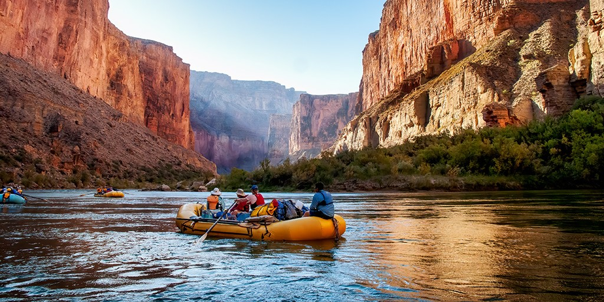

Don't wait too long to book your group! Summer season fills up incredibly fast. Book Today!

White Mountain Rafting
Pine Way is our most popular tour for beginners and families. The river takes you along the banks of a great pine forest. The rapids are gentle yet still provide that thrill of riding the waves.
Goat Trail is our all around tour. It is made of up of many gentle rapids with a few big white crests to ride across. Great for previous rafters!
Arctic Swan is our expert tour. It is composed of large and fierce white rapids. It is fast paced with few stops for breaks. This tour is closed during the wet season due to dangerous water levels.
White Mountain Rafting Tours
| Tours | Length | Required Age | Price Per Person | Open Months |
|---|---|---|---|---|
| Marble Sky | 2 Hours | 12+ | $79 | May - August |
| Pine Way | 2 Hours 45 Mins | 12+ | $100 | May - August |
| Goat Trail | 3 Hours | 16+ | $117 | June - August |
| Raising Rapid | 4 Hours | 16+ | $134 | June - July |
| Artic Swan | 3 Hours | 20+ | $215 | July - August |